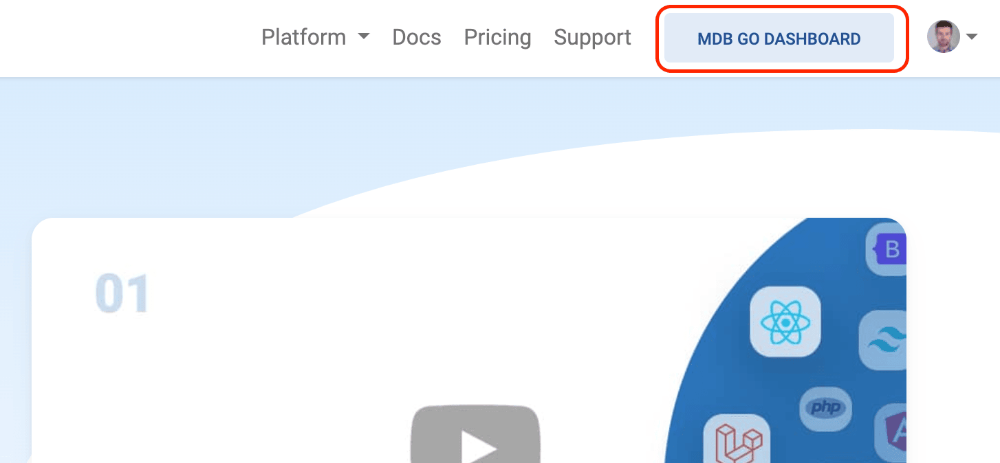

You have completed your project and published it on the web. Good job!
However, there is one more important task ahead of us - creating a repository.
Thanks to the repository, you will be able to control changes in your project and version them accordingly. Additionally, thanks to the repository, you can work on your project with other people in an organized way.
No technological project can do without a repository. Fortunately, creating and managing a repository is super easy with MDB GO.
Note: You can publish and host your project on the Internet for free, but creating and managing a repository is part of the paid version of MDB GO.
The paid version of MDB GO offers a wide range of additional options and costs $19 / month. You can find out more at this link.
If you don't want to use the paid version of MDB GO, you can:
To be able to manage the repository you need to have GIT installed.
So before you start the tutorial, make sure you have it installed (it is often installed by default or installed with other programs).
To check if GIT is installed on your machine, launch a terminal and then type the command below:
If the terminal shows you the version number, then GIT is installed.
If you don't see the version number, you need to install GIT. Go to the official GIT website, download the installer (Windows, Linux and macOS versions available) and install it.
Once git is installed, you can proceed to the steps below.
If you closed the terminal after the previous lesson, you need to restart it and go to the location of your project.
Type the command cd (it means going to the specified path) and
paste the path to the folder where you have your project.

Remember that your path may be different, depending on where you placed your project and whether you changed the name of the TW Elements package folder.
To initialize the repository, just enter the following command in the terminal and confirm it by pressing enter.
You can see quite a lot of logs in the terminal, including some warnings or errors. Do not worry about it. If at the end you see a success message "Project [name] successfully created" then everything is ok.
In the terminal you will see a link to your repository. You can immediately copy and paste it into your browser.
When you go to this link, you will be asked to log in. The login and password are the same as in your MDB account (the ones you used to log in to the terminal).
Go to https://mdbgo.com/ and click the SIGN UP / SIGN IN button in the upper right corner.
Then log in using your MDB account credentials again (the ones you used to log in to the terminal).
The MDB GO DASHBOARD button will then appear in the navbar in the upper right corner. Click on it to go to the MDB GO administration panel.
You will be transferred to the administration panel. Depending on the number of projects and your package, you may see different data there.
In the "Latest projects" section you will see your recently published project. If you click on its name, you will be taken to the control panel for that particular project.
Here you can manage your project - grant access to it, rename it, manage the repository, set a custom domain and much more. You also have access to the analytics panel.
Most of them are self-explanatory, so feel free to experiment for yourself.
We will discuss in detail all the functionalities of the administration panel in the next tutorial devoted entirely to MDB GO.
Congratulations! You have completed the Tailwind CSS tutorial 💪
You've done a great job, but keep going. More tutorials are waiting for you 🚀
If you have any questions or would like to show off your project, hit me up on twitter - I'd love to read about your impressions related to this tutorial 😉